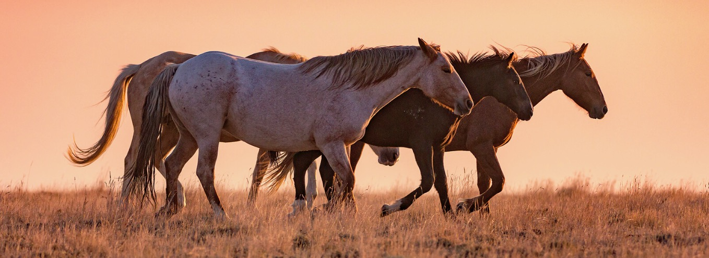

Wild Horses

Magnificent beasts dance across the landscape. Strong hooves beat the earth
to a thunderous rhythm. Colorful manes and tails paint the air, some lucky locks knotted by the
wind. Soft, but powerful eyes whisper the forgotten echo of America's wild lands.
Promoting the protection and preservation of America's wild mustanges and shedding light
on the controversial management of the burros.
The Bureau of Land Management (BLM) is the primary government angency
tasked with managing the free-roaming mustangs and burros on U.S. public lands.
Below is the link to the BLM's website if you are looking for further information:
The U.S. Department of the Interior Bureau
of Land Management Wild Horse and Burro Program